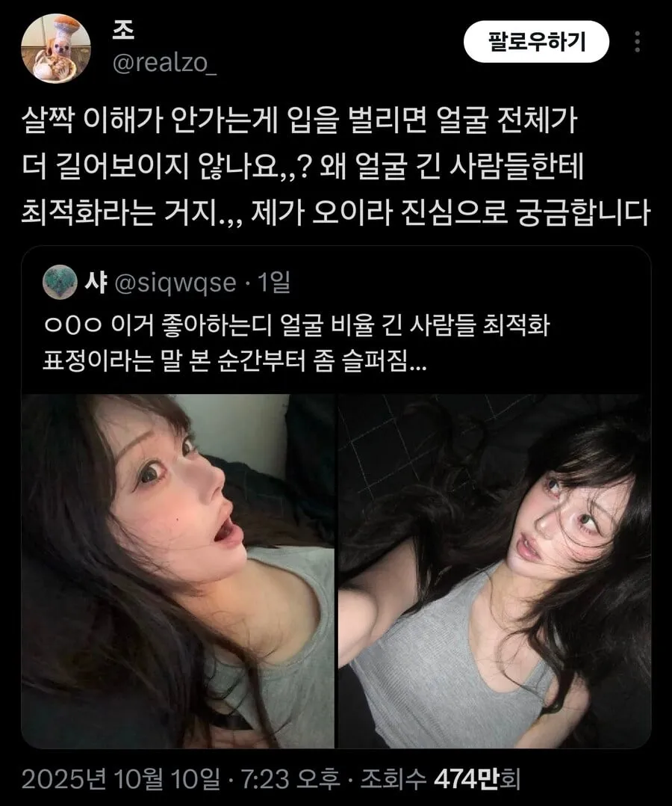
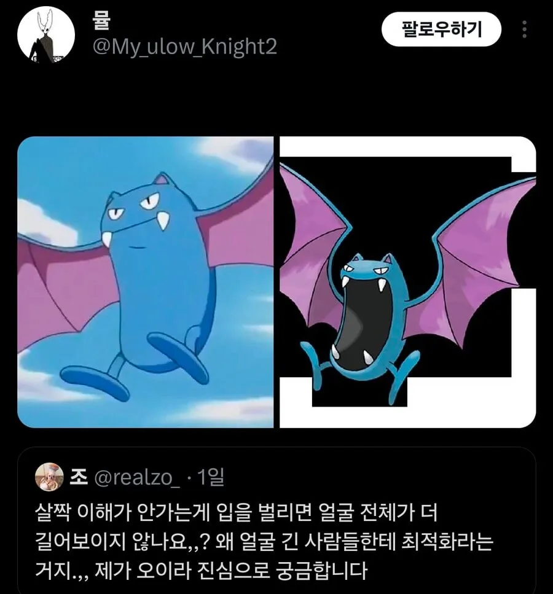
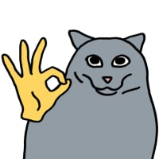

근데 짤 누구


근데 짤 누구
짤은 타입이 독, 비행인 포켓몬 골벳이야!
그냥 긴건지 입벌려서 그런건지 헷갈려서 좋은건가


머리에 쏙쏙 ㅋㅋㅋㅋ
예나 아님?
지젤같기도하고...
예나 지금이나
지젤
이마는 머리카락으로 가리는거


ㅋㅋㅋㅋㅋ
ㅋㅋㅋㅋㅋㅋㅋㅋㅋㅋㅋㅋㅋㅋㅋㅋㅋ
짤이 궁금했구나 골뱃이야! 진화하면 크로뱃이 되지!
짤은 포켓몬스터의 골뱃이라고함


길쭉해요
골뱃이잖아
요새 20대 초중반애들 화장 저렇게 하고 다니더라
아니 진심으로 저 얼굴이 길다고 말하는거야 지금? 중앙부가 길어서 성형도 안되는 얼굴을 들고 와야지 뭐야 이 농간은?
저사람들이 길다는게 아님
쟨 다물어도 긴거보니 원래 긴거구나
vs
입을 벌리니 긴건가? 다물면 좀 짧아지려나?